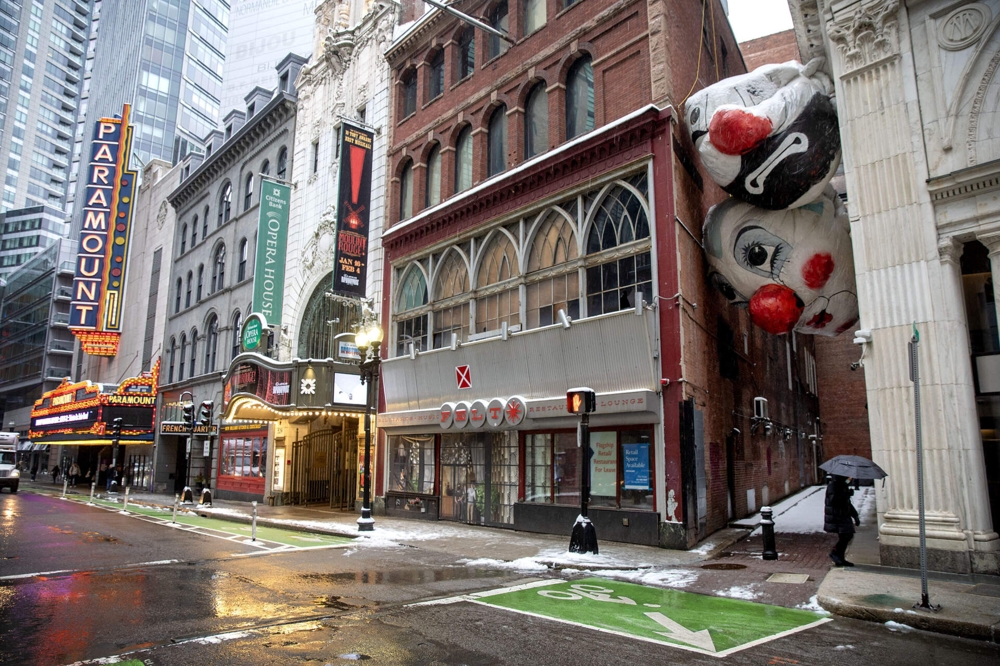

Day 1: Arrival in Boston
- Check into your hotel (e.g., The Boston Harbor Hotel) in the heart of the city.
- Enjoy a relaxing walk along the Freedom Trail, passing by iconic landmarks like Boston Common, the Old State House, and Faneuil Hall.
- Savor a delicious seafood dinner at a restaurant in the historic North End.
Day 2: Exploring the City
- Visit the Boston Tea Party Ships & Museum for an interactive experience about the famous historical event.
- Head to the Museum of Fine Arts for an afternoon of art appreciation, showcasing a vast collection of paintings, sculptures, and decorative arts.
- Experience a lively atmosphere at Fenway Park, home to the Boston Red Sox baseball team (if there's a game scheduled). Otherwise, take a tour of the stadium.
Day 3: Harvard and Beyond
- Take a day trip to Cambridge to visit Harvard University, strolling through the campus and admiring the historic buildings.
- Explore the MIT campus, renowned for its science and technology innovations.
- Enjoy a picnic lunch at the Charles River Esplanade, a beautiful park with scenic views.
Day 4: History and Culture
- Visit the John F. Kennedy Presidential Library and Museum, dedicated to the life and legacy of President Kennedy.
- Explore the Boston Public Library, a magnificent architectural masterpiece with a vast collection of books and resources.
- Experience a vibrant show at the Boston Symphony Hall or the Wang Theatre.
Day 5: Coastal Delights
- Take a ferry to the charming island of Nantucket, known for its quaint shops, historical sites, and beautiful beaches.
- Enjoy a leisurely stroll through the historic town, browsing local boutiques and art galleries.
- Savor fresh seafood at a waterfront restaurant and enjoy the stunning sunset views.
Day 6: Freedom Trail and Shopping
- Continue your exploration of the Freedom Trail, visiting sites like the Old North Church and the Paul Revere House.
- Indulge in retail therapy in the Back Bay neighborhood, known for its upscale boutiques and department stores.
- Enjoy a delicious meal in the trendy South End, featuring a diverse array of restaurants and bars.
Day 7: Departure
- Enjoy a leisurely breakfast at your hotel.
- Take a final walk through the city, capturing memories of your amazing Boston adventure.
- Depart from Boston Logan International Airport (BOS) with cherished experiences and a newfound appreciation for this historic city.